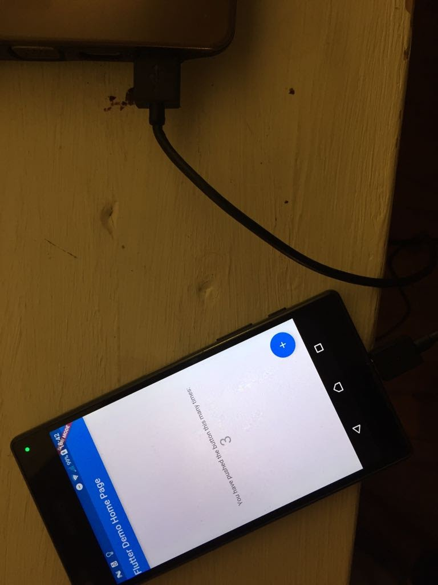

To install flutter follow this steps:
export PATH=$HOME/projects/flutter/bin:$PATH
Now let’s create a flutter project
flutter create flutter_hello_world
We can use a simulator or a divice to test the demo app. For me is more easy to do it in actual device because is faster than using a simulator. Connect the device to your computer and go Settings>About phone and tapping the Build number line seven times enable USB debugging. Let’s check if our devices is detected by running this command:
flutter devices
Let’s run the demo app to check that everything set up right.
cd myapp
flutter run

Go to lib/main.dart and modify the main funtion.
import 'package:flutter/material.dart';
void main() {
runApp(const Center(
child: const Text(
'Hello, world!',
textDirection: TextDirection.ltr,
)));
}